Da Serra Gaúcha para pódios nacionais, sul-americanos, pan-americanos e mundiais. A ACEN forma atletas, recebeu seleções brasileiras e abriu no Brasil o caminho da paracanoagem — com espaço para quem quer competir e para quem só quer remar.
Aula teste combinada direto pelo WhatsApp · Equipamentos fornecidos pela ACEN
Acompanhe a agenda da ACEN — competições, cursos e eventos ao longo do ano.
Mutirão de organização da associação
Formação de leme da ACEN
Competição nacional
Palestras com Ariela Pinto, Marcia Toloti e Vinicius Sanches, com mediação de Michel de Carli
Competição estadual
Evento de va'a em Porto Belo
Formação de leme da ACEN
Datas sujeitas a alteração. Para confirmar inscrições e detalhes, fale conosco pelo WhatsApp.
Os destaques mais recentes dos nossos atletas nas competições que participamos.
Atletas da ACEN conquistaram medalhas na etapa válida pelo Campeonato Catarinense de Va'a, realizada em Bombinhas.
Os atletas do Projeto Equipe de Canoagem ACEN / Prefeitura de Caxias do Sul embarcaram para o principal evento da modalidade no país. Ismael Lopes e Artur Belmudes competem nas categorias K1 e K2, nas distâncias de 1000 m e 3000 m, acompanhados pelo treinador Marcos Scolaro e por Maurício Silva.
Acompanhe os resultados da ACEN também pelo nosso Instagram @canoagemcaxias.
A ACEN nasceu em 21 de dezembro de 2002, criada por praticantes de canoagem de Caxias do Sul. A partir de 2004, sediou e executou o Projeto Navegar — programa federal que ensina canoagem, remo e vela — e iniciou a prática adaptada da canoagem, tornando-se pioneira no Brasil no que hoje é reconhecido como paracanoagem.
Mais de duas décadas depois, a ACEN segue com a missão de popularizar a canoagem na Serra Gaúcha, unindo alto rendimento, inclusão e formação humana em um único lago.
Popularizar a canoagem na Serra Gaúcha, formando atletas e transformando vidas através do esporte náutico.
Promover o desenvolvimento humano e atuar na assistência social, com ações voltadas a públicos em situação de vulnerabilidade.
Desenvolver atividades esportivas, educacionais, culturais e sociais, promovendo cursos, eventos e certificações.
Desenvolver a canoagem e demais modalidades náuticas e terrestres associadas ao esporte.
Contribuir para a proteção ambiental do lago e do entorno onde a associação atua.
Promover estudos e pesquisas, gerir programas e projetos, e congregar esforços com outras entidades e editais públicos.
Do primeiro contato com o remo às disputas em competição — conheça a estrutura, os atletas e o dia a dia da ACEN no lago.
Treinos, competições e bastidores publicados no nosso Instagram.
Treinos, competições, o projeto de base e a estrutura da ACEN. Um registro do que fazemos todos os dias na Serra Gaúcha.
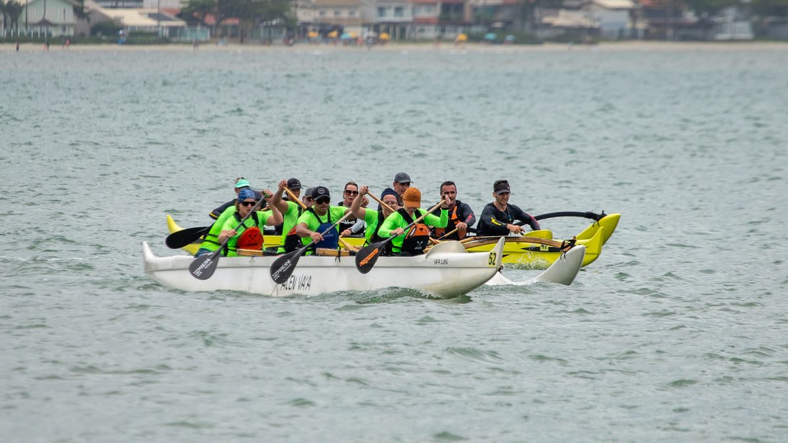
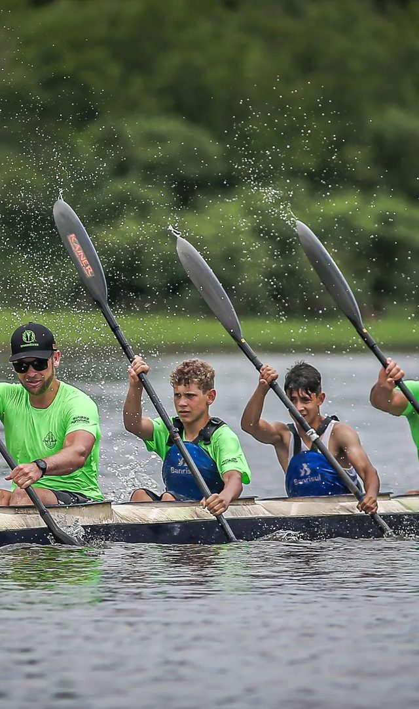
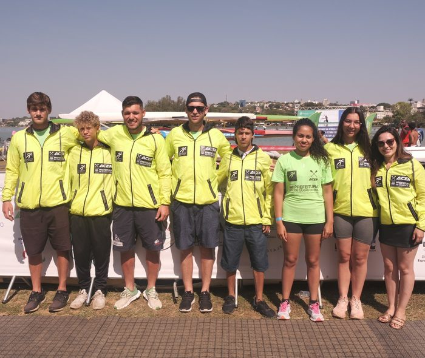
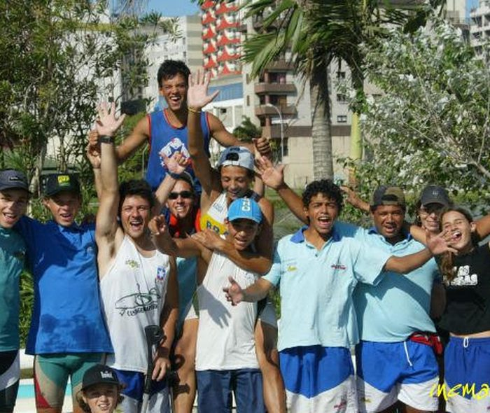
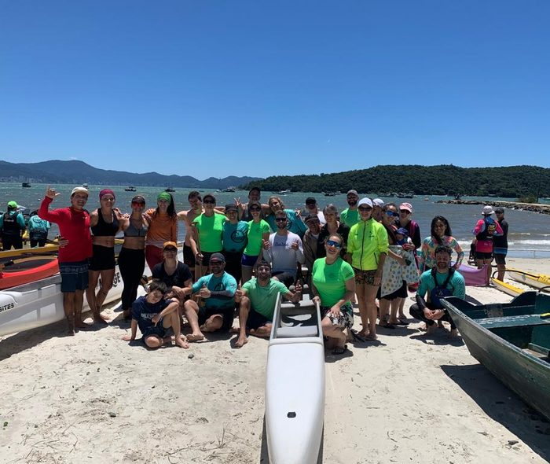
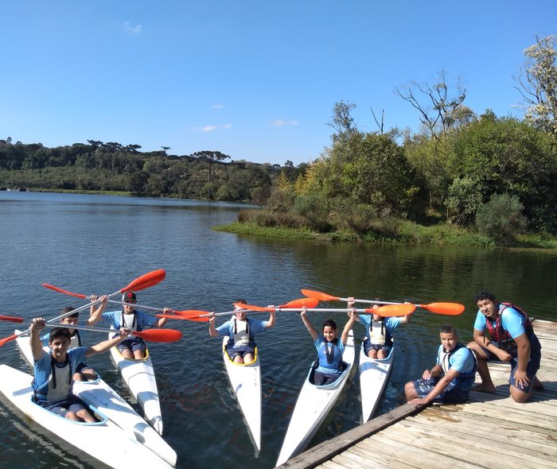
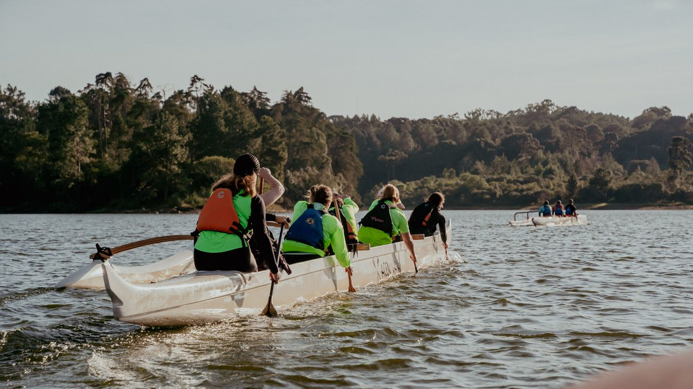
Registros de treinos, competições e do projeto de base da ACEN.
Toda a estrutura e os equipamentos são fornecidos pela ACEN — do primeiro remo até a preparação para competições.
A base do alto rendimento da ACEN, com histórico de sediar seleções brasileiras e formar campeões nacionais e internacionais.
Provas de longa distância, com títulos por equipe conquistados em campeonatos brasileiros.
Remada em equipe, ritmo e sincronia — uma das modalidades coletivas mais procuradas da associação.
Modalidade introduzida pela ACEN em 2015, unindo tradição polinésia e comunidade no lago.
Também iniciada em 2015, é hoje uma das portas de entrada mais procuradas por quem busca lazer ativo.
Nascida dentro da própria ACEN como canoagem adaptada, é hoje uma das modalidades de maior orgulho da entidade — com prata mundial conquistada em 2009.
Formada por ex-atletas experientes, com formação em Educação Física, responsáveis pela preparação de todas as modalidades da ACEN.
De segunda a sexta-feira, a ACEN recebe jovens de 8 a 16 anos para treinar canoagem com todo o equipamento fornecido pela associação — remo, embarcação e acompanhamento técnico incluídos. É aqui que nascem os próximos atletas da Serra Gaúcha, e é aqui que o esporte transforma rotinas, disciplina e horizontes.
Ao longo de mais de duas décadas, a ACEN desenvolveu projetos sociais e esportivos pioneiros — alguns em plena atividade, outros que deixaram um legado para o esporte náutico brasileiro.
Atende crianças e adolescentes de 8 a 16 anos no contraturno escolar para a formação de atletas de canoagem velocidade. Realizado desde a fundação da entidade, já revelou atletas com diversos títulos nacionais e internacionais.
Ativo desde 2004Executado de forma pioneira no país, formou diversos atletas com destaque nacional — incluindo Sebastião Abreu, medalha de prata no Campeonato Mundial, a primeira medalha da canoagem brasileira em mundiais.
Pioneiro no BrasilProjeto pioneiro e com reconhecimento nacional, atendeu idosos na prática de canoagem, alongamentos, caminhadas e treinos funcionais, de segunda a sábado.
Reconhecimento nacionalAtendeu 30 alunos por turno, de segunda a sábado, com foco educacional no ensino da canoagem, unindo esporte náutico e ação social na comunidade.
2016–2019Levantamento sobre os resultados oficiais da Confederação Brasileira de Canoagem (CBCa), considerando apenas colocações entre 1º e 3º lugar em Finais — de Campeonatos Brasileiros e Copa Brasil a competições internacionais.
581 pódios em competições nacionais (Campeonato Brasileiro e Copa Brasil) · 267 pódios em competições internacionais (Sul-americano, Pan-americano, Jogos Sul-Americanos, Copa do Mundo e Mundial)
Prata no Mundial de Paracanoagem — Sebastião "Tião" Abreu, K1 200m (classe LTA), Campeonato Mundial Sênior de Canoagem Velocidade, Dartmouth, Canadá, 2009. A primeira medalha da canoagem brasileira em campeonatos mundiais. Fonte: relatório de resultados CBCa, 1995–2026.
Realização do projeto Remadas Solidárias, unindo esporte náutico e ação social na comunidade da Serra Gaúcha.
A ACEN foi pioneira no estado ao introduzir duas novas modalidades náuticas: va'a e stand up paddle.
A associação passa a integrar oficialmente a FGC, fortalecendo sua presença no cenário estadual.
O paratleta formado pela ACEN conquistou a medalha de prata no K1 200m Paracanoagem (classe LTA) do Campeonato Mundial Sênior de Canoagem Velocidade, em Dartmouth, no Canadá — a primeira medalha da canoagem brasileira em campeonatos mundiais.
Prata no MundialA ACEN sediou o centro de treinamento da seleção brasileira masculina de canoagem velocidade.
Durante oito temporadas, a ACEN foi o centro de treinamento da seleção brasileira feminina de canoagem velocidade.
A associação também sediou o centro de treinamento da seleção gaúcha masculina de canoagem velocidade.
Início da execução do Projeto Navegar, programa federal de iniciação em canoagem, remo e vela.
Nasce o projeto social de formação de atletas de canoagem velocidade, origem da atual Equipe de Canoagem de base.
A ACEN inicia a prática adaptada da canoagem, tornando-se pioneira no Brasil no que hoje é reconhecido como paracanoagem.
Pioneira nacionalDesde sua origem, a ACEN integra oficialmente a CBCa, entidade máxima da canoagem nacional.
Em 21 de dezembro de 2002, praticantes de canoagem de Caxias do Sul fundam a Associação Caxiense de Esportes Náuticos.
Espaço reservado para o depoimento de um atleta, pai ou associado. Envie os relatos para preenchermos esta seção.
Espaço reservado para o depoimento de um atleta, pai ou associado. Envie os relatos para preenchermos esta seção.
Espaço reservado para o depoimento de um atleta, pai ou associado. Envie os relatos para preenchermos esta seção.
Espaço reservado para depoimentos reais. Envie os relatos para preenchermos esta seção.
Marcas e instituições que acreditaram no esporte náutico e ajudaram a construir a história da ACEN.
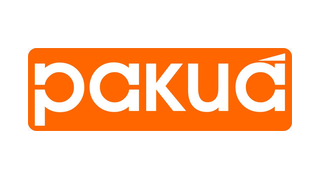
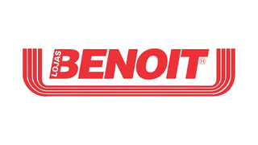
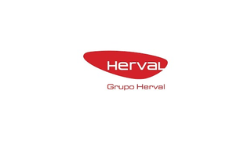
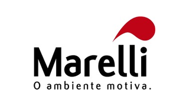
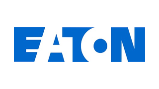
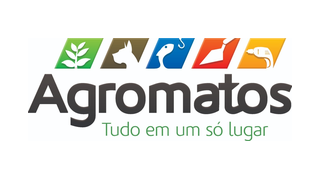
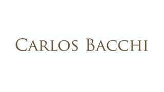
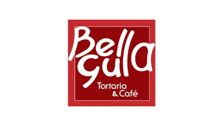
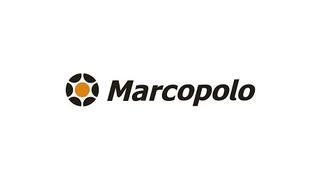
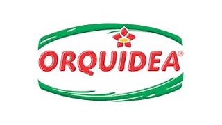
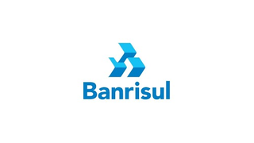
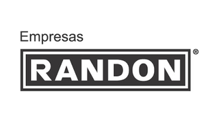
Empresas e instituições que já apoiaram a ACEN ao longo de sua história.
Patrocinar a ACEN é investir em esporte de alto rendimento, formação de base e inclusão — com uma história de resultados documentada e mais de duas décadas de presença na Serra Gaúcha.
848 pódios em Finais registrados pela CBCa, incluindo prata mundial, conquistas pan-americanas e sul-americanas. Sua marca ao lado de vencedores.
Projeto de base gratuito com jovens de 8 a 16 anos, pioneirismo na paracanoagem e no esporte para idosos. Associação sem fins lucrativos com finalidade social estatutária.
A principal referência de esportes náuticos da Serra Gaúcha, com 90 associados ativos, 6 modalidades e atividades semanais durante o ano inteiro.
Apresentamos propostas de patrocínio e apoio sob medida para a sua empresa — com contrapartidas de visibilidade e relacionamento com a comunidade náutica.
Da iniciação livre ao acompanhamento técnico individualizado. Valores e vagas para aula teste são combinados diretamente pelo WhatsApp.
Sem compromisso — venha conhecer o lago, a estrutura e a equipe.